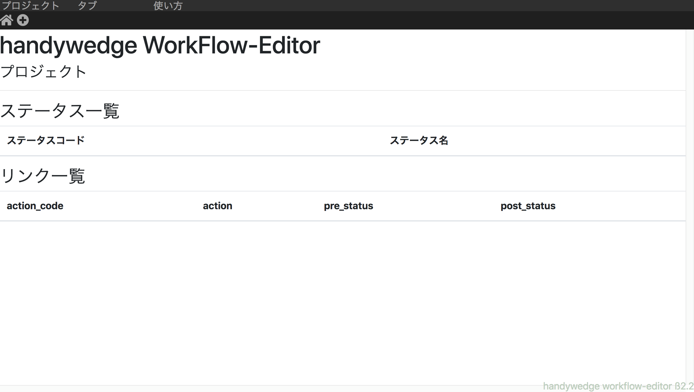
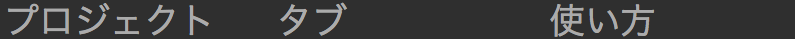
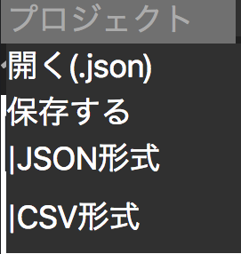
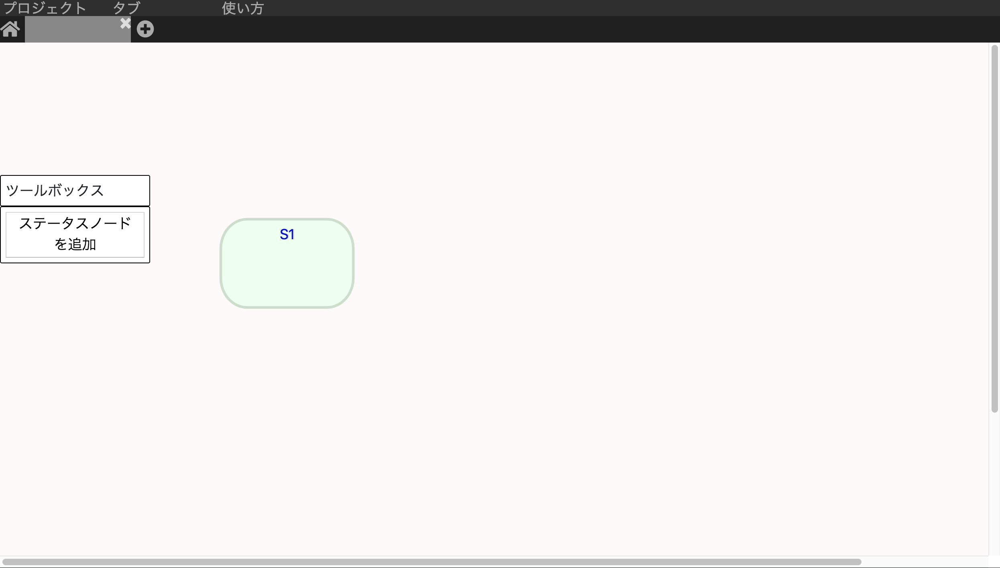
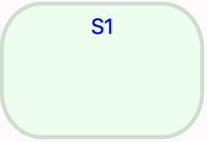
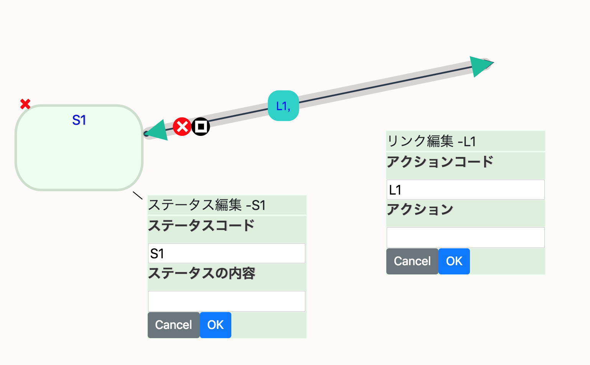

1.概要
Handywedge WorkFrowEditor（以下,wfeditor)は、
汎用フレームワークhandywedgeで使用されるデータの一部の作成を支援するものです。
ß2.2現在、ステータス、およびリンクを直感的に作成、保存することができます。
2.画面説明
ホーム画面
wfeditorを読み込み、最初に現れる画面です。
この画面では、他の画面で編集したステータスやリンクの全てを一覧で表示します。
上部バー
一番上側にある部分です。
マウスを重ねると下にメニューが出てきます。
プロジェクトペイン
上部バーの"プロジェクト"にマウスを重ねると現れます。
"開く(.json)"を押すとロード画面に遷移し、
wfeditorで作成した.json形式のファイルを読み込めます。
"保存する"の下側の"JSON形式","CSV形式"を押すと
それぞれの形式の保存データを作成できます。
タブペイン

上部バーの"タブ"にマウスを重ねると現れます。
"新規タブ"で新しいタブを作成できます。
"タブの設定"で現在選択しているタブの設定を変更できます。
使い方
ユーザーガイドを開きます。
タブバー
タブは画面上部にあります。
一番左側の家のマークを押すとホーム画面に遷移します。
家と＋の間の灰色の部分を"タブ"と言い、それぞれ編集画面に対応しています。
現在開いている編集画面に対応したタブは、明るい色で表示されます。
タブ内の情報を丸ごと削除するには、タブ右上の"x"ボタンを押してください。
また、タブをダブルクリックすると"タブの設定"の画面が出てきます。
一番右側の＋ボタンを押すと、タブが増えます。
編集画面
編集画面では、データを編集することができます。
編集画面は上部のタブと連携しており、何個でも作ることが可能です。
ツールボックス

ツールボックス上の"ステータスノードを追加"を押すと ステータスノードの箱が編集画面に追加されます。
タブ設定画面

現在開いているタブの名称を設定できます。
3.ステータス
ステータスは、上の様な箱で、"ステータスコード"と"ステータスの内容"を登録できます。
専ら、状態を表すことに使用されます。
"ステータスコード"は青色で上部に表示され、プロジェクト全体で重複は許されません。
"ステータスの内容"は黒色で中央に表示され、重複は問われません。

ステータスをクリックすると以下の様に編集モードになります。
編集モードでは、編集用のボックスが現れ、"ステータスコード"と"ステータスの内容"を編集できます
ステータスの箱に紐付けされた箱の内容を変更し、"OK"を押すことで
ステータスの内容を変更できます。
変更をしたくない時には"Cancel"を押してください。
編集の内容を破棄します。
また、編集画面の何もない部分を押すことでも、編集モードを解除し、変更を破棄できます。
編集モード時に右から出ているものは"リンク"で、次章で説明します。
編集モード時に、ステータス自体を破棄したい時には、 ステータス左上のこのボタンを押してください。
4.リンク

リンクは、ステータスを編集モードにした際に出てくる矢印状の線です。
リンクの矢印の両端は自由に伸ばすことができ、
またステータスと重ねることで、ステータス間を繋ぐことができます。
これにより、ステータスとステータスの関係性を表現します。
注意：ステータスとステータスを繋がない状態で、
矢印の根元部分のステータスの編集モードを解除してしまうと、リンクも同時に消えてしまいます。
何らかのステータスにリンクの先端をドラッグしてください。
リンクにマウスを重ねると、そのリンクに関係するボタンが出てきます。
このxボタンでは、リンクを削除することができます。
このボタンを押すと、以下の右下の様なリンク編集ボックスが現れます。
リンク編集ボックスでは、"アクション"と"アクションコード"を編集できます。
"アクション"はリンクの文字部分の左側に表示され、プロジェクト全体で重複は許されません。
"アクションコード"はリンクの文字部分の右側に表示され、重複は問われません。
リンクの箱に紐付けされた箱の内容を選択し、"OK"を押すことで
リンクの内容を変更できます。
変更をしたくない時には"Cancel"を押してください。
編集の内容を破棄します。
また、編集画面の何もない部分を押すことでも、編集モードを解除し、変更を破棄できます。

リンクの中間部分をドラッグすると、リンクを折り曲げることが出来ます。
折り曲げた関節は再び動かすことも可能です。
リンクにマウスを重ねた時にできる吹き出しのxボタンで、関節のみを消去出来ます。
リンクがステータスに繋がると、矢印の端部に黒い丸が現れます。
この状態になると、リンクとステータスが繋がれたこととなります。